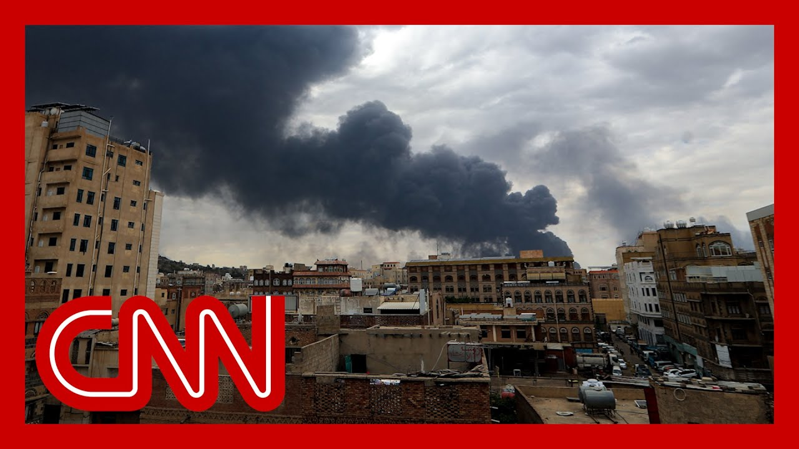

来B站一起耍【Global每日英语简报】
【以色列称在升级对胡塞武装的打击中已“完全瘫痪”也门主要机场】
Summary: Israel confirms attacking Yemen for a second day, targeting Sanaa's international airport and other sites in retaliation for a Houthi missile strike near Israel's Ben-Gurion Airport.
摘要： 以色列证实连续第二天袭击也门，目标是萨那国际机场及其他设施，以报复胡塞武装对以色列本-古里安机场附近的导弹袭击。

⏱️ Estimated Reading Time: 10 min
Israel is confirming that it has attacked targets in Yemen for a second straight day.
以色列证实已连续第二天袭击也门目标。
The IDF saying it hit the international airport in Sanaa and has fully disabled it.
以色列国防军称其袭击了萨那国际机场并使其完全瘫痪。
This video showing smoke rising around the airport.
视频显示机场周围浓烟升起。
The IDF says it struck several other targets around the capital, all in retaliation for a Houthi fired missile that landed on the grounds of Israel's main international airport.
以色列国防军表示还袭击了首都周边的其他目标，均是为报复胡塞武装发射的导弹落在以色列主要国际机场附近。
Over the weekend.
上周末。
We are following the story very closely.
我们正在密切关注此事。
We've got Jeremy Diamond back with us.
我们再次连线杰里米·戴蒙德。
Jeremy, we're seeing these images of the smoke coming through from China.
杰里米，我们正看到这些从中国传来的浓烟画面。
give me a sense of what we know right now and the targets.
请介绍一下我们目前掌握的情况及袭击目标。
Well, these are some of the most significant Israeli strikes in Yemen that we have seen to date.
这是迄今为止我们所见以色列对也门最重大的打击之一。
And the second round of strikes within just 24 hours.
且是24小时内的第二轮打击。
All of these strikes, over the last 24 hours, have been in retaliation for that Houthi ballistic missile attack that struck right next to Israel's international Ben-Gurion airport.
过去24小时的所有打击都是为报复胡塞武装弹道导弹袭击以色列本-古里安国际机场附近。
on Sunday, you can see several plumes of smoke rising within and around the Yemeni capital of Sana'a.
周日可以看到也门首都萨那及其周边多处浓烟升起。
including from the airport itself, where the Israeli military has confirmed that it did indeed carry out strikes directly on the airport targeting, the runways, aircraft and infrastructure at the airport.
包括机场本身，以色列军方证实确实直接袭击了机场跑道、飞机及基础设施。
They say that it has now fully disabled, the the airport itself.
他们表示现已完全瘫痪该机场。
These strikes were carried out about an hour after the Israeli military issued an unprecedented evacuation order for that Sanaa, International Airport in, Yemen, sending passengers and crew and staff, scrambling in that hour, before the Israeli military began carrying out those strikes, not only striking Sanaa International Airport, but also a cement factory, which was also struck, last night, in the first round of Israeli strikes there, as well as several power stations across, the, Yemeni capital.
这些打击发生在以军对也门萨那国际机场发布史无前例疏散令约一小时后，乘客、机组人员和工作人员在袭击前一小时仓促撤离。以军不仅袭击了萨那国际机场，还包括昨夜首轮打击中遭袭的水泥厂以及首都多处发电站。
so these are some very significant strikes.
这些是非常重大的打击。
We haven't yet gotten reports of casualties.
我们尚未收到伤亡报告。
The question now is whether this, Israeli response, will indeed continue, and whether or not we will ultimately see Israeli strikes against Iran as well.
现在问题是这种以色列报复是否会持续，以及最终是否会看到以色列也打击伊朗。
There has been pressure on the Israeli prime minister, both from within his government as well as from leaders of the opposition to level, of course, on Iran for its role in funding and supporting, these Houthi militants in Yemen, with the Israeli prime minister and others saying that they hold Iran directly responsible for these ongoing, Houthi attacks, but certainly a very significant situation, heavy strikes in Yemen.
以色列总理面临政府内部和反对党领袖施压，要求追究伊朗资助支持也门胡塞武装的责任。以总理等人称伊朗对这些持续袭击负直接责任。当前是也门遭受猛烈打击的重大局势。
And, of course, the potential for, this, back and forth between the Houthis and, Israel to very much continue.
当然胡塞武装与以色列之间的来回冲突极可能持续。
Joining us now to discuss the retired U.S. Army general, Wesley Clark.
现邀请退役美军上将韦斯利·克拉克参与讨论。
He served as NATO Supreme Allied commander.
他曾任北约盟军最高司令。
General Clark, thanks so much for joining us.
克拉克将军，非常感谢您的参与。
As you know, the IDF, the Israel Defense Forces says the attacks fully disabled the Yemen airport.
如您所知，以色列国防军称袭击已完全瘫痪也门机场。
Do you foresee the Houthis retaliating?
您预见胡塞武装会报复吗？
And how likely is it that this clash between Israel and Yemen could grow beyond the Houthis to eventually include Iran, the major supplier of arms and support for the Houthis?
以色列与也门冲突扩大至胡塞武装背后主要武器支持者伊朗的可能性有多大？
I think it is likely the Houthis will try to retaliate.
我认为胡塞武装很可能试图报复。
I'm not sure if they have the capacity to do that.
不确定他们是否具备这种能力。
They declared an air embargo against Israel.
他们宣布对以色列实施空中禁运。
So Israel is going to make sure that they are military dominant against who does show off the who shall respond?
因此以色列将确保其对胡塞武装的军事优势。
Israel will shut it down.
以色列会予以压制。
The United States has got to decide what it wants to do in this region.
美国必须决定在该地区的行动方针。
Is it going to get those successful talks with Iran?
是否要与伊朗成功谈判？
and if so, is that going to lead to, suspension of assistance to the Hutus and eventually a damper on the who?
若成功，是否会停止对胡塞武装的援助并最终遏制其行动？
These are going to strike back.
他们会反击。
We don't know that all that stuff is up in the air, but I do think the administration should be taking naval measures to shut down the seaborne resupply to the Houthis, which has been ongoing and has not been interrupted.
虽然这些尚不确定，但我认为政府应采取海军措施切断对胡塞武装的海上补给线——这一直持续且未受干扰。
Will it be a larger war?
会演变成更大规模战争吗？
it could be, but, it has to really be focused by the United States on the nuclear capacity of Iran.
有可能，但美国必须真正聚焦于伊朗的核能力。
That's what the key issue is in this region, the U.S. and Israel, as you know, general, have been targeting, the Houthis now for several weeks.
这才是该地区关键问题。如您所知将军，美以已针对胡塞武装数周。
So is it surprising that the Houthis are still able to strike Israel, as they did in recent days with this missile attack against Ben-Gurion airport and potentially other targets in the region, as well?
胡塞武装仍能袭击以色列——如近日对本-古里安机场的导弹袭击及可能针对该地区其他目标——是否令人意外？
It's a little surprising, Wolf, but, and we've hit 800 targets, apparently, there.
有点意外，沃尔夫。但我们显然已打击了800个目标。
But, on the other hand, it's a big country.
但另一方面，也门是个大国。
There's 20 million people there, or it's been under airborne attack, for ten years from the Saudis and the Emirati first before we did it.
那里有2000万人，且十年来先遭受沙特和阿联酋空袭，之后才是我们。
and so they've they've got pretty good measures to conceal, to protect and so forth.
因此他们具备相当好的隐蔽和保护措施。
You really want to go after them.
若真想打击他们，
You're probably going to have to put some special forces in on the ground to finish up the targeting and really go after them.
可能需派遣特种部队完成精准打击。
The IDF confirms that Israel has targeted Yemen's main international airport and several power plants in the capital of Sanaa.
以色列国防军证实以军袭击了也门主要国际机场及萨那首都的数座发电站。
This marks a second consecutive day of strikes.
这是连续第二天的打击。
The IDF says the attacks are in response to a Houthi ballistic missile that disrupted flights at Ben-Gurion Airport in Israel on Sunday.
以国防军称袭击是为报复胡塞武装周日扰乱以色列本-古里安机场航班的弹道导弹。
With us now, CNN military analyst, retired U.S. Army Major General James Spider Mark spider, we're seeing some of this footage of these strikes inside Sana'a, the capital here, the back and forth.
现连线CNN军事分析师、退役美军少将詹姆斯·"蜘蛛"·马克斯。我们正看到萨那首都的这些打击画面，这种来回冲突。
At this point, is there something Israel could do to get the Houthis to stop?
当前以色列能否采取行动让胡塞武装停止？
John, very difficult task with the Saudis tried to get the hoodies to stop.
约翰，这非常困难——沙特曾试图让胡塞武装停火。
Over the course of about a decade, they did some significant damage.
约十年间他们造成重大破坏。
But the Saudis are immensely resilient stockpiles of capabilities and support, certainly from Iran.
但胡塞武装拥有极强韧的储备能力及伊朗的支持。
Now that support from Iran has diminished, certainly.
当然如今伊朗支持已减少。
But the Who do you still exist in a certain amount of, capabilities.
但胡塞武装仍保有一定能力。
And they they do have additional sources.
他们还有其他资源。
So you have to define what you're really trying to achieve.
因此必须明确真正想要达成的目标。
And what the IDF is doing here is this is a step, clearly in a sequence of steps to dilute that capability that the Saudis have, but there who will still maintain a capacity to do kinds of disruption that we've seen before.
以军行动显然是一系列削弱胡塞武装能力的步骤之一，但他们仍保有实施以往那种破坏的能力。
But I think it's a great opportunity.
但我认为这是个良机。
On Israel's part.
对以色列而言。
If they've got the great targeting intelligence, they've got the capacity to strike.
若拥有精准情报和打击能力，
This kind of strike will continue.
此类打击将持续。
We can expect it, but we're going we're going to see it continue as, of course, in time, there won't be an end state that's going to look much different than this, unfortunately.
可预见其持续，但最终局面恐怕不会有多大改变。